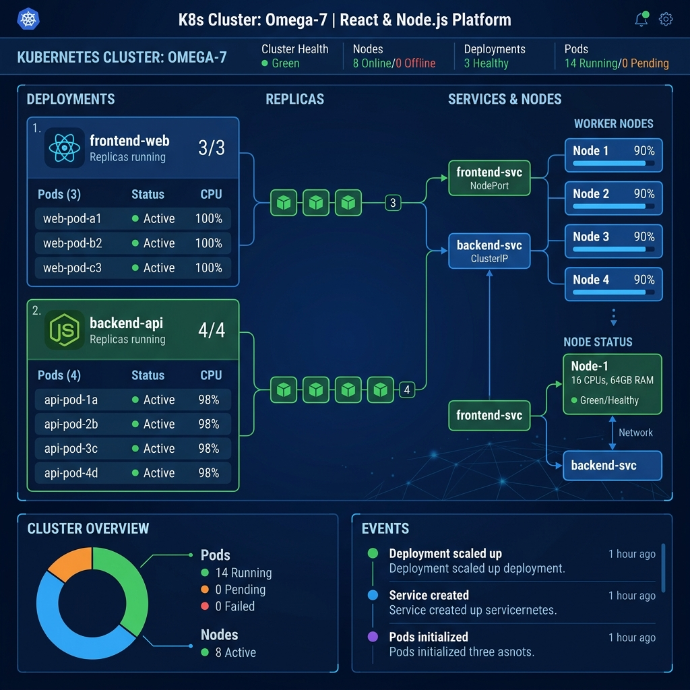

Hello, I'm
Sonie E
Cloud DevOps Engineer · 6+ Years · AWS · Kubernetes · Terraform
About Me
A brief overview of my professional identity and journey
Cloud DevOps Engineer with 7.3 years of experience including 4.2 years in Cloud DevOps and 3.1 years in Application Support. Proven expertise designing and maintaining CI/CD pipelines, deploying containerized workloads with Docker and Kubernetes on AWS (EKS) and Azure (AKS), and provisioning cloud infrastructure as code with Terraform and Ansible. Strong track record in release management, production deployment support, and incident resolution within Agile teams delivering secure, scalable, high-availability banking applications.
Key Strengths
My Journey
BSc Mathematics
Hindusthan College, Coimbatore. Specialized in computer applications.
Application Support Engineer
Joined Capgemini, providing L2/L3 support and scripting automations.
MBA - Management
Anna University (Distance Education). Focused on General Management.
Consultant, Cloud DevOps
Capgemini: Automated EKS workloads, Azure AKS/DevOps, and Terraform IaC.
Software Engineer (DevOps)
ThoughtProcess SoftTech: Hybrid AWS/Azure container deployments and AI-driven infrastructure automation.
Technical Skills
My core technical competencies and proficiency levels
AWS EC2
AWS S3
AWS RDS
AWS CloudFront
AWS Route 53
AWS VPC
AWS IAM
AWS Lambda
AWS EKS
AWS ECS
AWS CloudFormation
Jenkins
GitLab CI/CD
AWS CodePipeline
GitHub Actions
Docker
Kubernetes
Helm
Terraform
Ansible
PCF
IAM Policies
VPC Security Groups
SSL/TLS
Splunk
New Relic
AWS CloudWatch
Prometheus
Grafana
PagerDuty
Bash/Shell
Git
Bitbucket
VPC & Subnets
Load Balancers
DNS & Route 53
ServiceNow
JIRA
Autosys
Professional Experience
My professional work history and key deliverables
Software Engineer (Cloud DevOps Engineer)
ThoughtProcess SoftTech Private Limited
- Manage and troubleshoot Jenkins CI/CD pipeline status, ensuring reliable and repeatable build/deployment execution.
- Deploy and scale containerized applications on Amazon EKS using Kubernetes.
- Provision and update AWS infrastructure using Terraform, maintaining configuration consistency across environments.
- Configure CloudWatch alarms and dashboards to strengthen infrastructure monitoring and proactive alerting.
- Monitor application health and performance using Splunk and New Relic; support on-call rotations for production incident response.
- Automate repetitive operational tasks using Shell scripting and Ansible, reducing manual intervention.
- Manage GitHub repositories and review pull requests for infrastructure code changes.
- Provision and manage Microsoft Azure resources, including Azure Kubernetes Service (AKS) clusters and Azure DevOps pipelines, to support containerized workload deployments alongside AWS EKS.
- Leveraged AI-assisted tools (GitHub Copilot/ChatGPT) to generate and optimize Terraform and Ansible scripts, accelerating infrastructure-as-code development.
- Applied AI-driven log analysis and anomaly detection to correlate Splunk/New Relic alerts, speeding up root-cause identification.
Consultant — Cloud DevOps Engineer
Capgemini · Client: Synchrony Bank
- Developed and maintained CI/CD pipelines using Jenkins and GitHub Actions, standardizing build and deployment automation across multiple environments.
- Built Docker images and deployed containerized applications to Amazon EKS, managing Kubernetes Deployments, Services, ConfigMaps, and Secrets.
- Provisioned and maintained AWS infrastructure using Terraform across EC2, S3, IAM, VPC, RDS, EKS, ECS, CloudFront, and SNS.
- Designed and implemented secure Amazon VPC architecture with public and private subnets across multiple Availability Zones to isolate application, database, and management tiers.
- Implemented monitoring and dashboards using AWS CloudWatch, Prometheus, and Grafana, improving visibility into application and infrastructure health.
- Automated operational workflows with Shell/Bash scripts, reducing manual deployment steps and turnaround time.
- Led production deployment validation and rollback activities, safeguarding platform stability during releases.
- Provisioned and managed Microsoft Azure infrastructure, including Virtual Machines, AKS clusters, Blob Storage, and Azure Active Directory, to support hybrid cloud deployments.
- Automated infrastructure provisioning and release pipelines using Azure DevOps and ARM Templates, and configured Azure Monitor dashboards.
Senior Software Engineer – Application Support
Capgemini · Client: Synchrony Bank
- Monitored application health and system availability for a high-volume credit card origination platform integrated with retail partners (Amazon, Walmart).
- Investigated and resolved production incidents within SLA timelines; conducted root cause analysis (RCA) for critical issues.
- Analyzed application logs using Splunk and New Relic to diagnose and resolve performance and functional issues.
- Managed incident, problem, and change management tickets, coordinating with development teams for timely resolution.
- Performed batch monitoring, health checks, and operational support across production environments.
- Maintained support documentation and procedures, improving consistency of incident response.
Professional Certifications
Continuously expanding expertise through industry-recognized certifications
AWS Solutions Architect – Associate
Amazon Web Services
Credential ID: AWS-ASA-Placeholder
AWS Cloud Practitioner
Amazon Web Services
Credential ID: AWS-ACP-Placeholder
HashiCorp Terraform Associate
HashiCorp
Credential ID: HC-TFA-Placeholder
Certified Kubernetes Administrator (CKA)
CNCF / The Linux Foundation
Credential ID: CKA-Placeholder
Featured Projects
Real-world deployment and optimization case studies



Blue-Green Deployments on EKS
Engineered zero-downtime blue-green deployment pipelines on AWS EKS for high-traffic credit card APIs — enabling instant environment switching and slashing rollback times.

AWS Cloud Migration
Led migration of 10+ on-premises applications to AWS using lift-and-shift and re-platforming strategies, completing with less than 2 hours of cumulative downtime.

GitHub Activity
My contribution summaries and open-source projects
Contribution History

Featured Repositories
Kubernetes configuration files and Helm charts for deploying a production-ready 3-tier web application on EKS.
Declarative Jenkins pipeline for automated multi-stage compilation, security scanning, and deployment gates.
Modular Terraform configurations for standardizing multi-environment AWS networks, compute, and databases.
Kubernetes observability configurations deploying Prometheus, Grafana, and Alertmanager with core metric charts.
Education
My academic degrees and qualifications
MBA — General Management
Anna University (Distance Education)
Specialized in management practices, team building, and operational optimization. Completed while working full-time at Capgemini.
BSc — Mathematics with Computer Applications
Hindusthan College of Arts and Science, Coimbatore
Acquired core concepts in numerical computation, algorithms, database architectures, and structured programming paradigms.
Key Achievements
Measurable highlights and milestones from my professional path
Faster CI/CD Pipelines
Reduced pipeline execution time through parallelization and caching strategies in Jenkins.
Cloud Migrations
Successfully migrated on-premises applications to AWS with under 2 hours total downtime.
Availability SLA
Achieved for Synchrony's consumer-facing credit card APIs through automated deployment.
Fewer Incidents
Reduced repeat production incidents through structured RCA processes and preventive automation.
Microservices Containerized
Containerized legacy services, improving deployment success rates by 35% using Docker.
Rollback Time
Engineered blue-green deployments, slashing EKS rollbacks from 45 minutes to under 2 minutes.
Faster MTTR
Built observability stack with Prometheus & Grafana, reducing mean time to resolve incidents.
Time Saved Weekly
Automated repetitive support operations and scripting, saving hours per week.
Uptime Maintained
Maintained across 20+ critical enterprise applications with proactive monitoring.
Learning & Upskilling
How I continue to grow my capabilities and target credentials
AWS Cloud Foundations
Mastered core AWS services including VPC architectures, IAM security configurations, EC2 scaling, and S3 deployments.
Docker & Kubernetes Mastery
Specialized in container isolation, multi-environment cluster networking, Helm charts, and EKS lifecycle management.
CI/CD Pipeline Architecture
Practiced advanced automation flows, unit testing, integration gates, vulnerability checks, and container registries.
AWS Solutions Architect - Associate
Preparing for formal associate level AWS solutions architect exam. Diving deep into highly scalable architectures.
Advanced Kubernetes (CKA Path)
In-depth preparation for CKA credentials, focusing on cluster administration, network policies, and troubleshooting.
HashiCorp Terraform Associate
Targeting formal validation of HCL syntax, workspace strategies, state safety, and code modularization.
AWS DevOps Engineer Professional
Target roadmap for 2026, validating advanced configuration practices and automated pipeline architectures on AWS.
What People Say
Recommendations from colleagues, managers, and partners
Get In Touch
Let's discuss how I can help optimize your cloud operations and delivery speeds
Send Me A Message
Contact Information
Location
Nagercoil, Tamil Nadu, India
Phone
GitHub